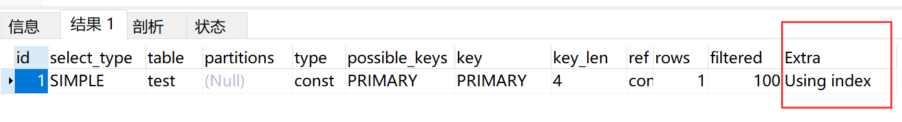
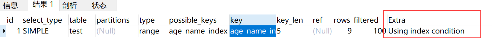

MySQL面试汇总
一、存储引擎
MySQL常见引擎对比：
| 引擎 | 索引 | 事务 | 锁 | 外键 | 缓存 | 存储限制 | 关注点 |
|---|---|---|---|---|---|---|---|
| MylSAM | 全文、B Tree | N | 表锁 | N | 缓存索引 | 256T | 性能 |
| InnoDB | B Tree、聚集 | Y | 行锁 | Y | 缓存索引和数据 | 64T | 事务 |
| MEMORY | Hash、BTree | N | 表锁 | N | - | RAM | 性能 |
| Archive | B Tree(限制自增ID) | N | - | N | - | - | 归档 |
MyISAM适用于只读取不写入的场景，比如ETL同步。
InnoDB是MySQL默认引擎，也是后端开发首选。
二、 索引
-
什么是索引？
答：索引是一种数据结构，用于帮助我们更快的进行数据查找。
-
MySQL的索引分类。
答：MySQL索引按不同的有不同的分类标准，大致如下(MECE)。
- 按索引字段数量：单列索引、联合索引（最走匹配原则）
- 按索引类型（逻辑上）：主键索引（未定义主键，找非空唯一索引或rowid）、唯一索引、全文索引、普通索引、空间索引（只能建立在空间数据类型，比如GEO、POINT等）。
- 按索引实现方法（数据结构）：Hash索引、B Tree索引
- 按存物理储结构分类：聚集（聚簇）索引、非聚集索引（二级索引、辅助索引）
-
索引都使用什么样的数据结构？
答：索引的实现与具体引擎有关，MySQL中常见的有Hash（Memory显示支持）、B树、R树等，InnoDB默认使用B+树。
-
各种索引数据结构的优劣势?
答：Hash索引只有Memory引擎显示支持，InnoDB使用伪hash，即在B+树上使用key的hash值进行索引查找，需要自己维护hash方法。原生Hash索引中存储的是key的hash值和指向记录的指针，它的特性如下：
- Hash索引非常紧凑，且与索引key的数据类型和长度无关。
- Hash索引不能通过索引拿到数据，必须访问表，但访问Memory表是很快的。
- Hash索引的顺序与原数据存储顺序无法保持一致，所以不能使用hash索引排序（不是不能排序）。
- Hash索引只能使用精确的等值查找，不支持IN，>=，>，like和联合索引的最左匹配（只能精确限定每个字段的值），这与hash本身特性有关。
- Hash冲突多的话，查询代价较大。
- 一般当索引key较长，且只使用等值查询的话可以使用hash索引，比如为URL字段建立Hash索引。
B+树是一个平衡多叉树，每一层节点按关键字从小到大排序， 数据只存在于叶子节点，并组织成双向链表形式。各key检索效率相当，很方便的支持范围查找。

-
为什么用B+树而不用其他树？
答：所有二叉树都有一个问题，就是随着数据量增大高度变大（logn），IO次数增加，B树层数较低，一般3-4层。如果是非平衡二叉树，还可能有退化成链表的问题。
B树 VS B+树：
- B+树非叶子节点不存实际数据，占用空间更小，一次IO能读取到内存的关键字也就越多，相对磁盘IO次数降低了。
- B+树查询效率很稳定，每个关键字走的路径长度一致。
- B+树所有数据存叶子节点，并且叶子节点以双向组织，非常适合扫库和范围查找，而B树需要按中根遍历之类的。
-
聚集索引和非聚集索引
答：聚集索引（clustered index）：
- 叶子节点存储的就是整行数据，直接通过索引可以拿到数据，对于InnoDB表，聚集索引就是整个表，整个表就是一个聚集索引。
- 数据的物理存放顺序与索引顺序是一致的，只要索引是相邻的，那么数据也一定是相邻的。
- 一个表只有一种物理存储顺序，因此只能有一个聚集索引。默认情况下InnoDB将主键设为聚集索引，没有主键时找第一个非空唯一索引作为聚集索引，否则以6字节的rowid生成聚集索引。
非聚集索引（secondary index）：
- 叶子节点存储的是主键列的值，再根据这个主键去聚集索引查找到某行，因此非聚集索引又被称为二级索引或辅助索引（索引的索引）。
- MyISAM不支持聚集索引。
-
覆盖索引： SQL只需要通过索引就可以返回需要的数据，而不需要通过二级索引查到主键后再去查询数据，一般覆盖索引都是联合索引，通过限制其中一个值去查另外一个值。Extra中有’Using Index’表示使用了覆盖索引，覆盖索引是提升性能的重要手段之一。

-
非聚簇索引一定会回表查询吗?
答：不一定，如果查询的字段全部命中索引就不需要查表。
-
全文索引： 全文索引就像一个搜索引擎，对文本分词后进行统计索引，全文索引分为自然语言全文索引和布尔全文索引，后者可以在查询是使用一些修饰符号限定取什么或不取什么。MySQL对全文索引支持很有限，一般需要配置第三方插件比如Sphinx、Lucene使用，建议直接上ES。
-
空间索引： 空间索引只针对于空间数据类型，比如GEOMETRY、POINT 、LINESTRING 等，很少使用。
-
建立索引需要考虑那些因素？
答：字段的使用频率（频率高的字段设置索引）、区分度（越高越靠前）、字段长度（索引大小）、查询方式等。联合索引需要考虑字段顺序，查询时需要满足最左匹配原则。如果一个索引是(a,b,c)，则有如下规则：
- 索引块先按a排序，如果a是一样的在按b排序，最后按c排序，这很重要，理解B+树的结构就能推断出一个查询是否走索引。
- **最左匹配原则：**最左优先，以最左边的为起点任何连续的索引都能匹配上。同时遇到范围查询(>、<、between、like)就会停止匹配。注意，这与字段在SQL中写的顺序无关，MySQL会自动按索引顺序重排，我们判断是否走索引时也可先重排再判断。
- 字符串的like操作只有前缀匹配时才能走索引。
- 示例参考：https://blog.csdn.net/sinat_41917109/article/details/88944290
-
没有使用到索引的情况
- 使用!=, !>, not in, not like等负向查询
- where或order by中使用了数学运算或函数
- 字符串like时，左边是通配符，如like “%aa”
- 当MySQL任务全表扫描比走索引快的时候
- where条件中有Or，且其中一个无索引，则另一个也不会走索引（必须要全表扫描，就没必要走索引）
- 当使用联合索引时，不满足最左匹配原则的字段无法使用索引，或部分使用索引。
-
索引下推（index condition pushdown）
- 索引下推时=是MySQL5.6及以后推出的一个优化功能，默认开启。
- InnoDB引擎下，如果一个二级联合索引被部分命中（不完全符合最左原则），此时MySQL不会根据命中条件去MySQL取回全部数据，然后交给Server再次过滤。而是筛选出的index中（叶子节点）继续过滤后续条件，直到完全符合筛选条件，最后拿着这些主键去查询数据。
- InnoDB下ICP只在二级索引中有效，聚集索引叶子节点本来就是数据行，回表次数不会减少。
- 参考：https://blog.csdn.net/mccand1234/article/details/95799942
- 参考：https://www.cnblogs.com/lonelyxmas/p/12630085.html

三、锁与事务
-
什么是事务？
答：事务是一系列对系统中数据的访问操作所组成的执行单元，它们满足ACID特性。
-
事务的特性（ACID）?
答：ACID具体解释如下：
- A(Atomicity，原子性)：一个事务中的操作，要么全部成功执行，要么全部不执行。
- C(Consistency，一致性)：一个事务在执行前和执行后，数据库都必须处于一致状态。也就是说事务的执行只会导致数据库从一个一致状态转换到另一个一致状态。
- I(Isolation，隔离性)：事务之间的执行是相互独立的，一个事务的执行不能被其他事务干扰。
- D(Durability，持久性)：一旦事务提交，它对数据库的变更就是永久性的，即使宕机也能恢复到事务提交成功后的状态。
-
多个事务并发执行会有什么问题？
答：事务并发存在的问题如下：
- 脏读：A事务读取了B事务未提交的内容，然后B事务进行了回滚。（读取未提交数据）
- 不可重读读：事务A开启了一个事务，第一次读取数据m，然后事务B对数据进行了修改，事务A再次读m，发现两次m的值不一致。（多次读值不一致）
- 幻读：事务A开启事务，第一次读到m条数据，然后事务B插入一条数据，事务A再次读，发现读到了m+1条数据。（多次读数量不一致）
-
MySQL事务隔离级别？
答：MySQL四种事务隔离级别：
- READ UNCOMMITTED（未提交读）：其他事务可以读取到本事务未提交的数据。这个隔离级别解决不了任何问题，且性能提升不大，因此很少使用。
- READ COMMITTED（已提交读）：其他事务只能读取本事务提交的部分。这个隔离级别解决了脏读的问题，但还存在不可重复读和幻读的问题。
- REPEATABLE READ（可重复读）：解决了脏读和不可重读读的问题，
InnoDB通过MVCC+ Next-Key Locks 也能解决幻读的问题。这是MySQL InnoDB引擎默认的隔离级别。 - SERIALIZABLE（可串行化）：最高隔离级别，解决所有问题，性能最差，也很少使用。
-
事务ACID与事务隔离级别的关系？
答：MySQL通过不同程度的隔离级别，来不同程度解决并发事务带来的问题，最大程度保证事务的隔离（Isolation，ACID中的I）特性。
-
MySQL锁分类
答：为保证事务的正确执行，MySQL再进行各种操作时会对数据上锁，锁可以按不同标准分类如下：
- 按排他性分：排他锁（x锁/写锁）、共享锁（s锁/读锁）,共享锁上锁后可再次加共享锁，但不能加排他锁，排他锁上锁后不能加任何锁。
- 按上锁策略分：悲观锁、乐观锁。
- 按锁的粒度分：表锁、行锁、页锁等。
-
InnoDB中的锁
- 行锁（Record Lock）:行锁直接加在
唯一索引上面，锁住的是key，如果没有唯一索引或未命中索引，则锁住整个表。 - 间隙锁（Gap Lock）:锁定索引记录间隙，确保索引记录的间隙不变。间隙锁是针对事务隔离级别为可重复读或以上级别的，间隙锁锁定的是某段间隙，开区间（不包含检索key本身），主要功能是防止Insert操作，以解决幻读问题。
- Next-Key Lock ：它不是一种具体的锁，更像一种算法，行锁和间隙锁组合起来就叫Next-Key Lock。一般加Next-Key Lock可以看作两步，对所有命中的索引加行锁，然后
除唯一索引唯一查找外，都会在扫描区间内加上间隙锁（包括最边缘两侧）。 - 在更新操作中如果没有用到索引，则间隙锁会锁定整个表，即整个表都无法插入。
- 行锁（Record Lock）:行锁直接加在
-
InnoDB是如何实现各种隔离级别的？（大坑，有难度）
答：为优化数据库性能，InnoDB引入了MVCC（多版本并发控制）机制，在回答问题之前，先来了解以下MVCC相关内容。
🔴 MySQL中几种重要的日志
-
Undo log：它记录了每一次操作之前的数据版本，用于事务回滚和MVCC的数据可见性控制，Undo log分为Insert和Update两种，它属于引擎层逻辑（记录具体数据行）日志。简单来说，Undo log就是后悔药。 -
Redo log：事务操作中，对数据的更新并不是立刻写到磁盘的，而是将对数据页的物理修改记录到redo log中，在事务提交时，将redo log刷到磁盘。此时对数据而言，很可能只是在内存做了修改，与磁盘的数据页并不一致，称为脏页，InnoDB后台有一个线程专门用于刷脏。如果此时Server宕机，重启后也能从redo log逐步恢复已提交的事务。采用Redo log而不是直接将数据刷盘的主要原因是性能问题，数据页刷盘是随机IO操作，写redo/undo log是顺序IO操作，一般顺序IO比随机IO快，在HDD中尤为显著。Redo log属于引擎层物理日志。
-
binlog：binlog是MySQL服务层维护的，跟引擎无关。它记录的是事务操作的内容，一般用于主从同步，或导入数据到其他存储引擎，如ES、Hive等。
🔴 MVCC
InnoDB在每行数据末尾记录了trx_id、db_roll_ptr两个字段，其中trx_id表示最后一个事务的ID，这个id在事务开启的时候就记录了。db_roll_ptr是一个指针，指向本次更新操作（删除实际是将删除标记置位，也是更新操作）对应的undo log位置（即操作前原始数据位置，
MVCC中insert undo log在事务提交后就会删除，因此单靠MVCC不能解决幻读问题，需要加锁辅助完成）。因此，一条数据的多次更新操作会形成一条undo log链（也称为版本链）。Innodb中存在purge线程，它会查询那些比现在
最老的活动事务还早的undo log，并删除它们，从而保证undo log文件不至于无限增长。MVCC有一个ReadView的概念，从字面意思来讲就是“读视图”，的确，它就是我们常说的快照。ReadView中维护着以下数据结构：
- up_limit_id ：低水位，当前活跃事务中最小的事务ID
- low_limit_id ：高水位，当前活跃事务中最大的事务ID
- trx_ids ：当前活跃事务列表
注意：当前事务ID（trx_id）不在活跃事务表中，也不会在高、低水位出现，因为当前事务的修改对自己总是可见的。
ReadView按以下规则确定数据是否可见：
- trx_id >= low_limit_id(高水位)：不可见，这种情况表示在
ReadView创建后新开的事务。 - trx_id < up_limit_id (低水位)：可见，如果事务ID小于
ReadView创建时刻最小的活跃事务ID，那么它在ReadView创建前一定提交了。 - up_limit_id <= trx_id < low_limit_id：如果trx_id在trx_ids中则不可见，否则可见。这是因为事务的提交时间是无序的，它可能在最小活跃事务之后创建，但在
ReadView创建前提交，这种情况应该也是可见的。
总结一下：在
ReadView创建时刻还未提交的事务，当前事务除外，以及之后新开的事务，对数据做的更新操作不可见，其他情况均可见。请注意文中高亮部分，ReadView建立就是快照的建立。- READ UNCOMMITTED：读采用当前读，不加任何锁，写加X行锁。
- READ COMMITTED：数据的读取不加锁，采用快照读（MVCC），
快照（ReadView）在每个Select操作时新建一个。数据的写入、修改、删除需要加X行锁（外键约束检查及唯一性检查时会封锁区间）。 - REPEATABLE READ：数据读取时不加锁，采用快照读，
快照（ReadView）在事务中第一次Select时创建，随后在整个事务中都使用这个快照。数据的写入、修改、删除需要加X行锁（外键约束检查及唯一性检查时会封锁区间）。* REPEATABLE READ级别解决幻读：MVCC + 乐观next-key lock实现。 * - SERIALIZABLE：一个事务中读加S锁，写加X锁（NEXT-KEY LOCK），事务之间多个操作采用两段锁协议（加S1，加S2，加X1，释放X1，释放S2，释放S1）。保证串行化调度，可能存在死锁。
-
-
如何显示加锁
答：
select...from lock in share mode加共享锁，select..from for update加排他锁，这种读也成为当前读。
四、零散问题
- 为什么要尽量设定一个主键?
答：确保数据行在整张数据表中的唯一性，推荐使用自增ID作为主键，原因如下：
- 自增Id能保证主键索引的高效性，使用业务字段做主键，如果字段长度无法保证，可能存在索引过大的问题。另外业务字段无法保证插入的顺序，因此索引可能需要频繁调整移动，造成内存碎片，降低插入性能。
- 业务字段存在被更新的可能性，如果更新的是主键的话，不仅操作繁琐，还可能违反唯一性约束，导致更新失败。另外，主键的更新意味着索引的变化（破坏了有序性），带来无意义的性能开销。
-
为什么mysql尽量要用Not NULL？
答：NULL值在业务流程中很可能带来不必要的麻烦，比如常见的NPE。另外NULL值在MySQL中占用1字节空间，而空字符串则不占用空间。
-
char和varchar的区别
答：char是定长的，无论是否存满申请的长度，char都会占用那么多字符的空间。varchar申请的只是最大长度，实际占用为填充的字符串长度+1，最后一个字符存储使用的空间。在检索效率上char>varchar，需要注意任何超出声明长度的字符串均无法插入char和varchar字段，如果长度无法确定，请考虑使用text，但该字段尽量不要用于索引、筛选条件之类的，会有性能问题。
-
int和int(11)并没有区别，都是4字节。
-
超大分页怎么处理优化
答：需要注意，MySQL的limit是先load offset+N行，然后放弃前offset行，这样效率很低。一种可行办法是先定位Id，再关联数据：
select a.* from t1 a, (select id from t1 where xxx limit 100000, 20) b where a.id = b.id，上面这条SQL先limit查id，由于覆盖索引，这条SQL执行速度会很快。如果id连续性较好，还可以直接使用where id>100000 limit 20，效果更好。 -
MySQL分库分表
答：一般按水平和垂直两个方向分割：
- 垂直分表：即将一部分不常用、数据较大的字段分出去单独成立为扩展表。
- 垂直分库：一般需要结合实际业务，按业务进行库的拆分，如用户、订单、商品拆为3个库，单独放在3个服务器上，防止单机性能瓶颈。
- 水平分表：一般按某些规则，比如订单号取模，将数据分到不同的表中，但这些表还在一个库中，还是存在单机瓶颈问题，一般不采用。
- 水平分库分表：将单表数据切分到多个机器上，每个机器有相同的库和表。水平分库分表切分规则一般有如下几种：
- 区间划分（RANGE）：比如流水号0-10000在一个表，10001-20000在另一个表。
- HASH取模：比如按订单号取模分配到到对应机器，可能存在扩容的麻烦，考虑一致性hash（还是存在少量数据迁移）。
- 地理区域
- 时间：按数据冷热程度划分
-
存储过程：互联网行业用的少，主要是需求变动太频繁，不好维护。银行用多（银行核心业务不用MySQL，外围产品可能使用），主要考虑数据安全性。
-
关系型数据库范式建模
- 第一范式：每个属性都是原子的，不可再分。（存在数据冗余、插入异常、删除异常、更新异常等问题）
- 第二范式：非主属性完全依赖
码，消除部分函数依赖。即消除(x, y) => z 且 (x) => z的情况。 - 第三范式：没有非主属性对码的
传递依赖。即消除(x) => y，(y) => z的情况。 - BC范式：不存在主属性对码的部分依赖和传递依赖。
Author: jackcharles
Link: http://blog.zjee.ml/2020/05/04/mysql-interview/
License: 知识共享署名-非商业性使用 4.0 国际许可协议
这里是评论区，使用 来必力(LiveRe) 插件实现，邮箱、昵称、密码可随意填写，但要修改、删除评论就必须登录LiveRe，您也可以使用第三方账号登录LiveRe。